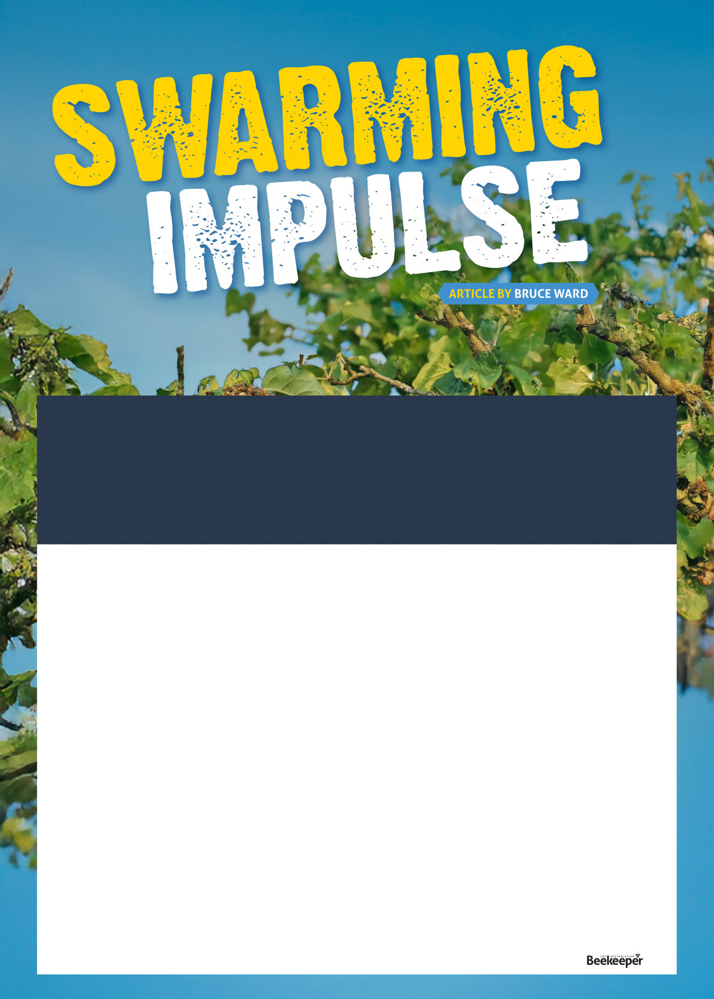

ARTICLE BY BRUCE WARD
Social insects usually start new colonies in one of two ways:
A single fertilised queen starts a new colony on her own. This is the strategy used
by many social wasps and ants.
An existing colony splits into two or more parts with the new colony starting off
with a viable queen and a good number of workers move to a new site and form
a new colony. This is the strategy used by our honey bees and the process is
known as swarming.
The swarming process in honey bees is quite simple at the
most basic level. The parent hive starts to prepare a batch of
new queens. These new queens take 16 days to hatch. Before
the new queens start to hatch, the old queen and a proportion
of the workers leave the hive and fly off to find a new home.
One of the new queens will mate and take over the laying
duties in the parent hive. (Bees may also swarm if their hive
becomes uninhabitable. These ‘absconding’ swarms are very
different and not discussed further in this article.)
Swarming behaviour is not a strategic activity planned and
directed by the queen. It is the result of thousands of instinc-
tive decisions made by the individual bees in the hive. Those
decisions are driven by seasonal and chemical signals which
combine into a collective ‘impulse’ to swarm.
Critical signals that can contribute to the swarming impulse
include:
• Overcrowding and congestion inside the hive.
• Supplies of fresh pollen and nectar.
• A lack of cells available for the queen to lay.
• The presence of drones in the hive.
• Reducing levels of queen pheromone.
• Reducing levels of brood pheromone.
• Increasing daylength.
Some of these are stronger drivers of swarm behaviour than
others and different breeds of bees are likely to respond differ-
ently to the signals.
Fresh pollen and nectar are an essential precursor, but a
heavy honey flow will usually suppress swarming. It also makes
sense that hives will only swarm when drones are present.
Overcrowding is one of the strongest drivers if the swarming
impulse. It is not the total strength of the hive, but the ratio of
bees to hive space, and the ratio of nurse bees to field workers
that is important. All hives will be likely to swarm if the pop-
ulation exceeds the available space. But hives living in small
spaces are more likely to run out of space than hives living in
large spaces.
A lack of space for the queen to lay is also a powerful swarm
trigger. A two-deck hive in spring will need at least seven full-
depth frames of brood. If the brood nest is constrained by a
queen excluder, and some of the brood frames are filled with
honey, nectar and pollen, then there will not be enough space
for a good queen to lay at her full capacity. If the bees are col-
lecting good quantities nectar, they will use empty brood cells
as temporary nectar storage. While this nectar is usually moved
further into the hive during the night, this temporary storage
can further reduce the cells available for the queen to lay.
Queen and brood pheromones play an important role in hive
stability. Queen pheromones decline slowly as the queen ages.
Hives with older queens are more likely to swarm than hives
with younger queens. Brood pheromones will reduce if the
brood area is restricted. Queen and brood pheromones also
become increasingly diluted in overcrowded hives.
Vol. 127 | No. 4 |
| 21